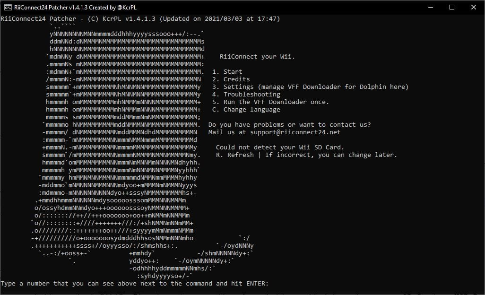
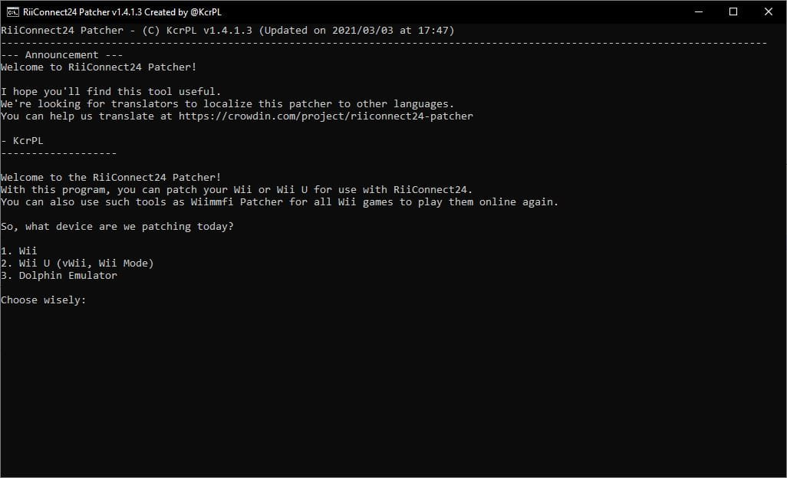
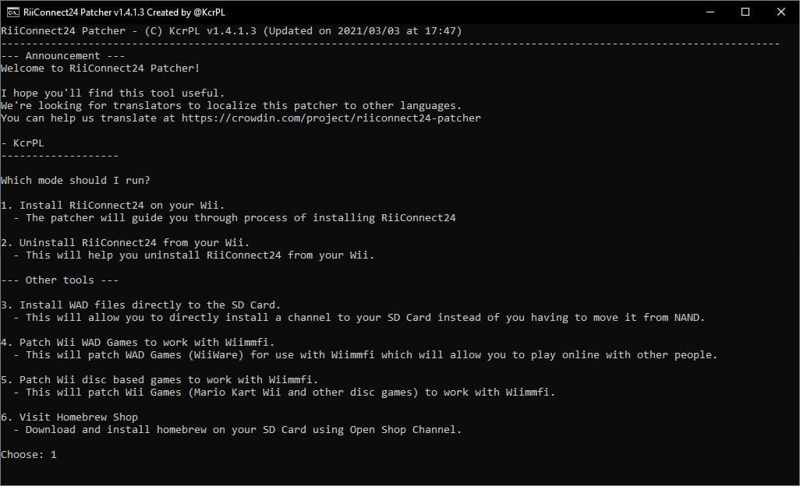

RiiConnect24
Si vous avez besoin d’aide pour quoi que ce soit concernant ce tutoriel, veuillez rejoindre le serveur RiiConnect24 Discord (recommandé) ou envoyez-nous un e-mail à [email protected].

RiiConnect24 vous permet d’utiliser les services interrompus de WiiConnect24, qui incluent les chaînes infos, météo, votes, Nintendo et concours Mii, ainsi que Wii Mail.
Ce guide concerne uniquement la Wii standard.
- Suivez ce tutoriel si vous voulez installer Riiconnect24 sur vWii (Mode Wii sur la Wii u).
- Suivez ce tutoriel si vous souhaitez installer RiiConnect24 sur Dolphin Emulator.
N’INSTALLEZ PAS RIICONNECT24 SUR UNE WII MINI ! Cela ne fonctionnera pas et cela briquera le système.
Ce dont vous avez besoin
- Une carte SD ou un périphérique USB
- Une Wii avec une connexion Internet
- Un ordinateur
- Patcher Riiconnect24 (Windows, Mac et Linux)
Instructions
Section 1 - Utiliser le Patcher Riiconnect24
Si vous ne pouvez pas faire marcher le patcher Riiconnect24, Rejoignez le Discord Server Riiconnect24 (recommandé) ou e-mailez nous chez [email protected] pour assistance.
- Cliquez sur le lien ci-dessus pour accéder à la page GitHub où se trouve le patcher.
- Téléchargez
RiiConnect24Patcher.batsi vous êtes sous Windows, etRiiConnect24Patcher.shsi vous êtes sur un système Unix - Sur Windows ouvrez
Riiconnect24Patcher.bat. Sur les systèmes Unix, ouvrez le terminal et tapezbash, puis faites glisserRiiConnect24Patcher.shdans le terminal et appuyez sur Entrée. Cela devrait ressembler à cecibash RiiConnect24Patcher.sh. - Appuyez sur 1 pour choisir “
Start” et confirmez votre sélection en appuyant surENTER. (NOTE : Ces captures d’écran proviennent de la version Windows du patcher.)  - Sélectionnez le périphérique pour lequel vous êtes en train de patcher. 
- Pour ce guide, choisissez “
Installer RiiConnect24 sur votre Wii”  - Choisissez “
Express (Recommendé)”. Cela vous procurera tout ce dont vous aurez besoin.
- Sélectionnez votre région.

- Pendant que vous y êtes, RiiConnect24 Patcher peut également télécharger d’autres chaînes optionnelles qui n’utilisent pas RiiConnect24.
[X]Représente l’option sélectionnée. Appuyez simplement sur 5 etENTRÉEsi vous n’êtes pas intéressé.
- Connectez votre carte SD ou votre périphérique USB à votre ordinateur et sélectionnez “
1”.
- Si votre périphérique est correctement détecté, sélectionnez “
1”. Sinon, assurez-vous qu’il y a un dossier appeléappssur votre carte SD ou votre clé USB et réessayez.
- Soyez patient…

- Après que ça se termine, on apprécié so vous prenez une minute pour nous envoyer un commentaire anonyme. Si vous ne voulez pas, fermez le patcher. Tous les fichiers dois être sur votre carte SD.


- Si tout n’a pas été copié automatiquement sur votre carte SD ou votre périphérique USB, copiez les dossiers
WADetappsà côté deRiiConnect24Patcher.bat, et collez-les sur votre carte SD ou votre périphérique USB.
Section II - Installer des wads
Vous allez maintenant installer les IOS patchées et chaînes WADs aui sont nécessaires pour utiliser Riiconnect24.
- Insérer la carte SD ou le périphérique USB dans votre Wii.
- Lancez la Chaîne Homebrew sur votre Wii.
- Lancez Wii Mod Lite.
- À l’aide de la croix directionnelle de votre télécommande Wii, accédez à
WAD Manager, puis accédez au dossierwad. - Surlignez tous les WADs du dossier en appuyant sur le bouton + pour les sélectionner. Quand tous les WADs sont sélectionné, appuyez A deux fois pour installer les WADs.
- Si vous obtenez une erreur indiquant qu’un titre avec une version supérieure est déjà installé (erreur -1035), revenez au menu de sélection WAD et appuyez sur le bouton - sur le WAD en surbrillance pour le désinstaller, puis réessayez de l’installer.
- Une fois qu’ils sont tous correctement installés, appuyez sur le bouton HOME pour revenir au Homebrew Channel.
Section III - Patcher nwc24msg.cfg
Vous allez maintenant patchée votre nwc24msg.cfg qui est obligatoire pour utiliser Wii Mail.
- Lancez RiiConnect24 Mail Patcher.
- Cela ne devrait prendre que quelques secondes pour patcher votre fichier nwc24msg.cfg. Quand il termine, appuyez sur le bouton HOME pour quitter.
Si vous n’avez pas pus patché votre nwc24msg.cfg correctement, veuillez rejoindre Le server Discord de Riiconnect24 (recommandé) ou e-mailez nous vers [email protected] pour assistance.
Section IV - Se connecter
À partir du 16 juin 2022, le DNS RiiConnect24 change. En savoir plus: ici.
Vous allez maintenant configurer votre DNS vers nos serveurs. Cette option est facultative, mais elle est recommandée, car elle améliore l’utilisation de RiiConnect24 et Wiimmfi en rendant certaines autres fonctionnalités disponibles.
- Allez dans les
Options Wii. - Allez dans
Paramètres Wii. - Allez à la
Page 2, puis cliquez surInternet. - Allez dans
Paramètres de connexion. - Sélectionnez votre connexion actuelle.
- Cliquez sur
Changer. - Allez dans
Obtention automatique d'un DNS(pas de l’adresse IP), puis sélectionnezNon, puisParamètres Avancés. - Tapez
167.86.108.126comme DNS primaire. - Tapez
1.1.1.1comme DNS secondaire. - Sélectionnez
Confirmer, puisSauvegarder. - Appuyez sur
OKpour effectuer un test de connexion. - Si le test de connexion est réussi, sélectionnez
Nonafin d’ignorer la mise à jour système Wii. - Allez sur
WiiConnect24, puisWiiConnect24à nouveau, et vérifiez que c’est activé. - De retour au menu WiiConnect24, allez sur
Standby Connectionet vérifiez que c’est activé. - Dans
Slot Illumination, nous recommandons de mettre le voyant du disque surDimouBright, mais c’est facultatif. - Enfin, allez dans la section
Internet, puisUser AgreementsouAgreement/Contact, puisYes. Veuillez lire le texte affiché.
Il est courant d’obtenir l’erreur FORE000006 sur le canal de prévision après avoir installé RiiConnect24. Si vous l’obtenez, assurez-vous que votre Wii est à la bonne date et heure puis n’attendez pas plus d’une heure et il peut commencer à travailler. [Si vous obtenez toujours une erreur FORE000006 ou si vous recevez NEWS000006, vous devrez supprimer votre SYSCONF avec RC24-Clear-Tool].
Vous obtiendrez une erreur 268503 lors du chargement de la Chaîne Nintendo. C’est normal. Vous pouvez contourner l’erreur en appuyant sur OK.
Si vous obtenez l’erreur 107245, vous n’avez pas installé l’IOS corrigé. Assurez-vous d’installer IOS31 et IOS80 avec Wii Mod Lite, avec tous les autres WADs patchés.
Si vous obtenez l’erreur 107304 ou si vous voyez le contrat d’utilisation de Nintendo sans le logo de RiiConnect24, cela signifie que votre FAI (fournisseur d’accès Internet) ou votre réseau bloque l’utilisation d’un DNS. Vous pouvez définir optention automatique DNS sur On pour résoudre ce problème. RiiConnect24 fonctionnera toujours sans elle. Ou, vous pouvez utiliser notre programme DNS-Server.
Si vous obtenez des erreurs telles que WiiConnect24 et la chaîne boutique Wii ne sont actuellement pas disponibles dans votre pays, allez dans Paramètres Wii - > Dernière page -> Pays et remplacez-le par Royaume-Uni. Vous obtiendrez cette erreur lorsque vous utilisez un pays que nous ne prenons pas en charge. Contactez-nous à [email protected] si vous avez besoin d’aide supplémentaire.
Continuer vers Wiimmfi
Wiimmfi vous permet de jouer à des jeux en ligne après l’arrêt de la connexion Wi-Fi Nintendo. L’installation est facultative.
Continué vers wiilink
Wiilinl vous permet d’utiliser les chaînes exclusive japonais comme Wii no Ma et la chaîne Digicam Print. L’installation est facultative.
Continuer vers la navigation du site
Nous avons de nombreux autres tutoriels que vous pourriez aimer.